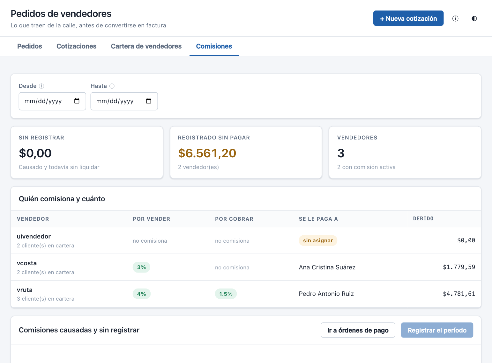
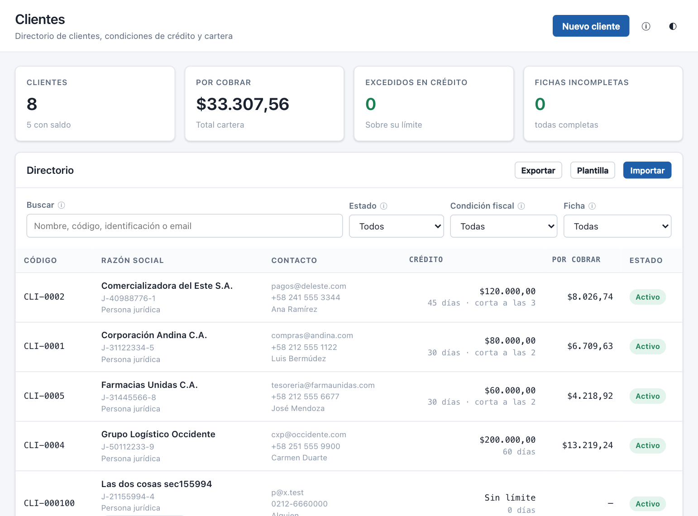
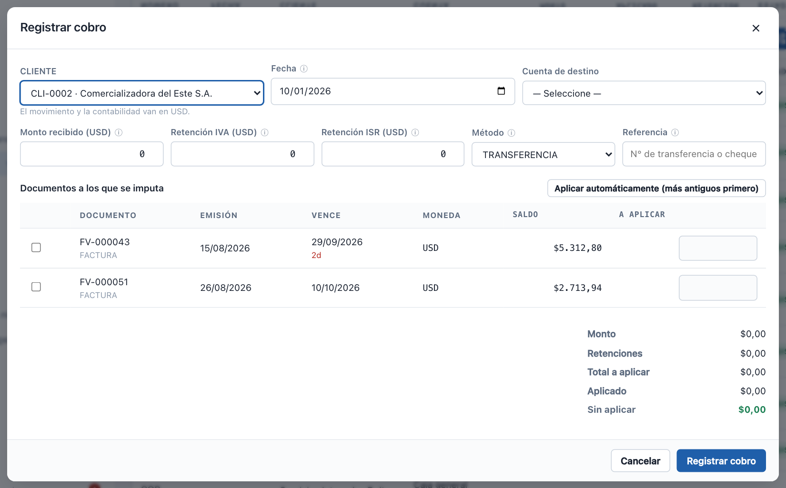
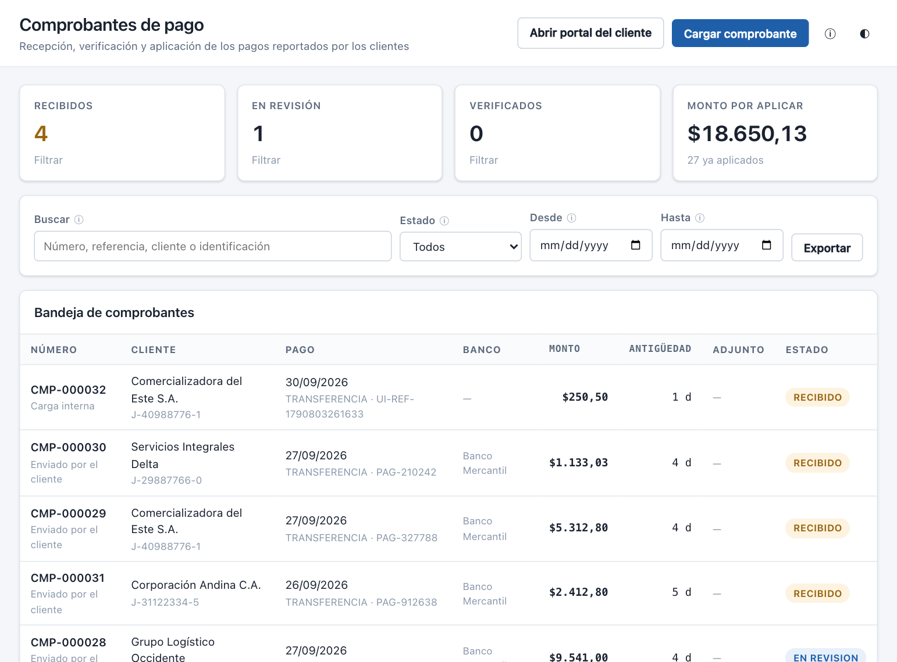
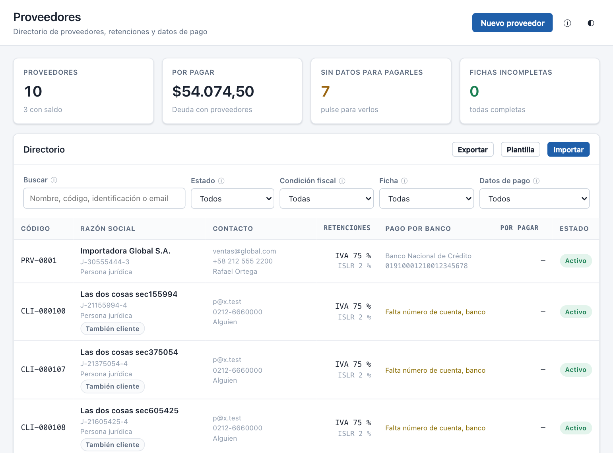
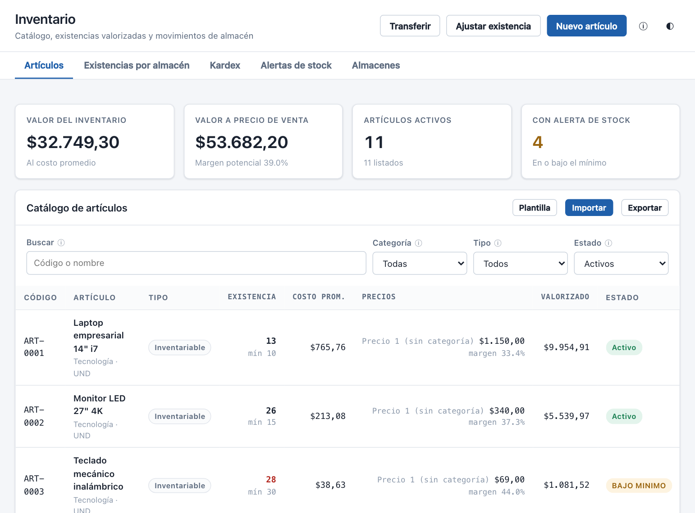
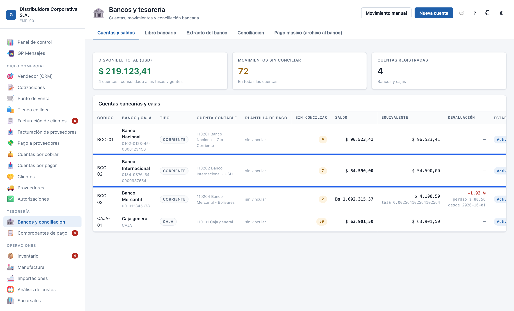
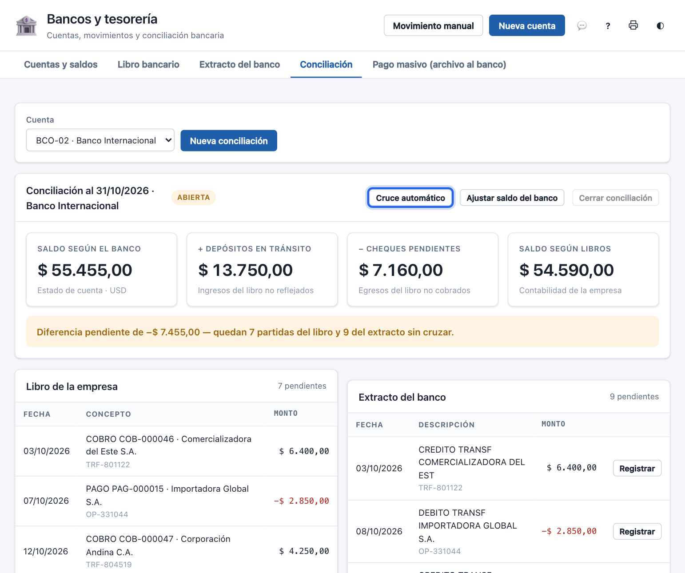
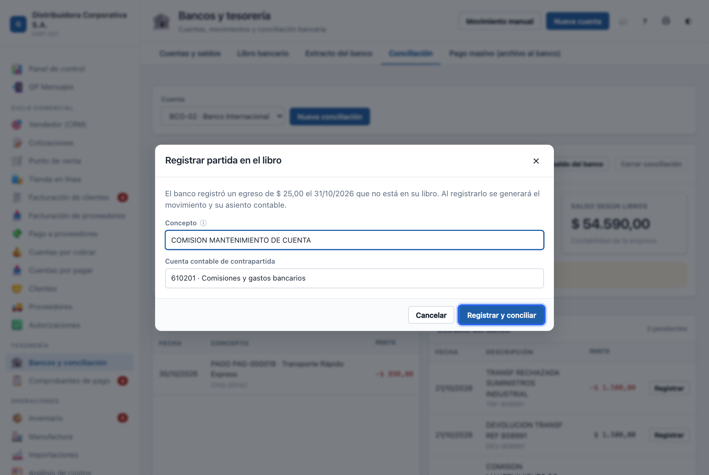
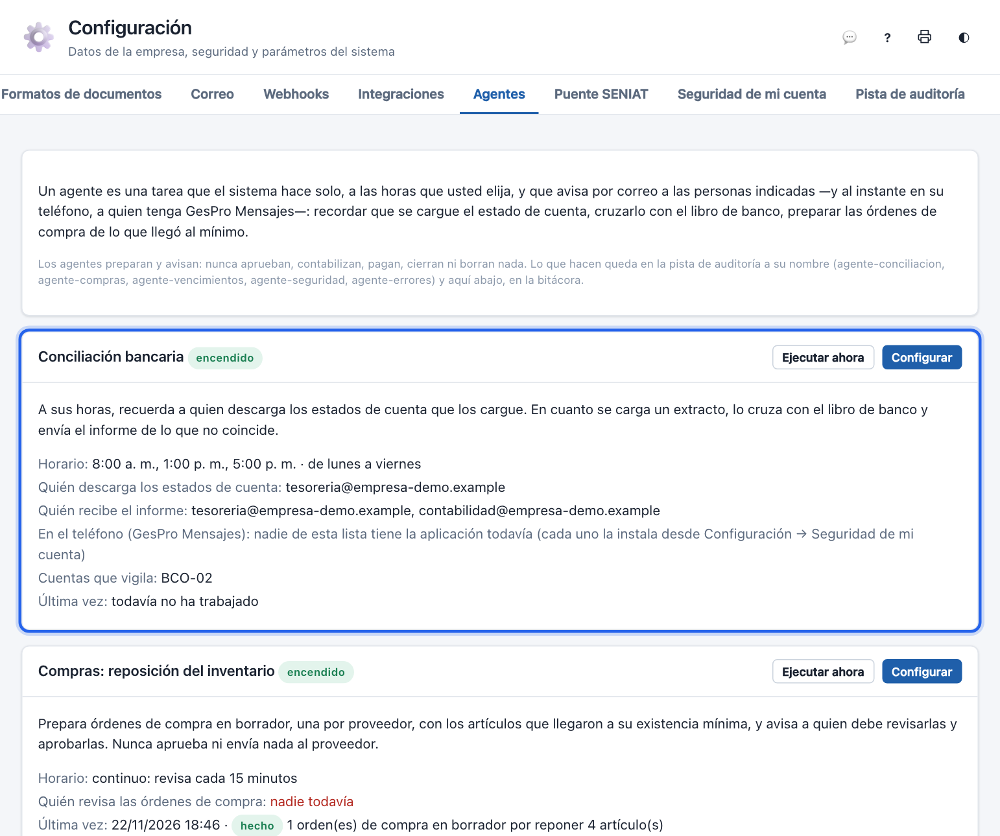

Manual Práctico
del Usuario
Domina en un solo día el ciclo completo de tu empresa: Ventas, Cuentas por Cobrar, Cuentas por Pagar, Inventario, Análisis de Costos y Bancos.
Índice de Contenidos
Las 3 Reglas de Oro Antes de Empezar
Cuando apruebas una factura, cobro o compra, el inventario, los saldos y la contabilidad se actualizan al instante y sin duplicar trabajo.
En borrador puedes editar y borrar sin gastar correlativos. Al aprobar entra a los libros; lo aprobado nunca se borra, se anula por reverso.
Pulsa ⓘ junto a cualquier campo, pulsa ? arriba para preguntarle a la Ayuda IA, o abre el Manual de usuario en el menú.
🎬 Videos de repaso de este módulo (disponibles también en versión
-WhatsApp.mp4): 01-Vendedor (3:40) · 02-Cotizaciones (1:46) · 03-Punto-de-venta (2:05) · 04-Tienda-en-linea (1:57) · Guia-del-vendedor (5:29, móvil).1. Mapa del Módulo de Ventas
En GesPro, todas las puertas por donde entra una venta viven en el grupo Ciclo comercial del menú lateral (y el portal móvil en /vendedores):
| Sección del menú | Para qué la usarás todos los días |
|---|---|
| Vendedor (CRM) | Prospectos, Embudo de negocios, Agenda de llamadas/visitas, Clientes 360, Cotizaciones, Pedidos, Carteras, Ruta y visitas, Comisiones, Automatización y Marketing. |
| Cotizaciones | Bandeja dedicada para emitir ofertas formales en PDF, controlar su fecha de validez y aprobar descuentos grandes. |
| Punto de venta (POS) | Venta rápida en mostrador con lector de código de barras, pago multimoneda con vuelto, impresora térmica y modo sin conexión. |
| Tienda en línea | Catálogo web público conectado a tu inventario real, cupones y pagos en línea (Stripe, PayPal, Binance Pay, Pago Móvil C2P Mercantil). |
Portal de vendedores (/vendedores) | Pantalla móvil para vendedores de calle: asistente «Mi día», levantar pedidos, cargar comprobantes de pago y dictar cierres de visita por voz. |
2. Vendedor (CRM): Vende con orden y sin olvidar seguimientos
2.1 De Prospecto a Cliente (Paso a paso)
- Entra a Vendedor (CRM) → Prospectos y pulsa «+ Prospecto».
- Escribe nombre, empresa, teléfono o correo y cómo llegó (origen). Si el teléfono, correo o RIF ya existen, GesPro te avisa para no duplicar.
- Observa la Puntuación de prospectos (0 a 100):
- 🔥 70 o más (Caliente): llamar hoy primero.
- 🌤️ 40 a 69 (Tibio): seguimiento programado.
- ❄️ Menos de 40 (Frío): nutrir o retomar.
- Deja agendada la primera acción en Agenda (te ordena primero lo vencido, luego hoy y esta semana).
- Cuando haya un negocio concreto, crea una Oportunidad (monto estimado y fecha de cierre). Muévela arrastrando la tarjeta en el Embudo (arrastrar y soltar).
- Si el cliente compra, conviértelo en Cliente (pasa todo su historial y contactos). Si pierdes el negocio, elige siempre el motivo de pérdida (precio, competencia, plazos…): el Tablero usa esto para saber qué corregir.
2.2 Clientes 360 y Automatización
- En Clientes 360, haz clic en cualquier cliente y verás en una sola pantalla: lo que compra, cuánto debe, sus contactos, sus negocios y todo lo hablado con él.
- En Automatización puedes usar Plantillas de correo/WhatsApp (
{{nombre}},{{empresa}},{{vendedor}}), Secuencias (ej. llamar hoy → escribir a los 3 días → visitar a la semana) y Formularios web que reparten prospectos por turno. - En Marketing, arma Segmentos dinámicos (ej. «clientes que no compran hace 60 días») y lanza campañas por correo o cola de WhatsApp midiendo aperturas, clics y ventas generadas.
3. Cotizaciones y Aprobación de Descuentos
Cómo emitir una cotización sin sorpresas
- Entra a Cotizaciones (o Vendedor (CRM) → Cotizaciones) y pulsa «+ Nueva cotización» (o pulsa «Cotizar» directo desde una Oportunidad del CRM).
- Selecciona el cliente, la fecha de validez (30 días por defecto; sale impresa en grande en el PDF para evitar discusiones de precios viejos) y agrega los artículos del catálogo.
- Protección automática: GesPro no deja cotizar artículos que no tienen existencia en ningún almacén.
- Guarda y pulsa «Descargar PDF» para enviársela al cliente por correo o WhatsApp.
¿Qué pasa si das un descuento grande?
Si tu empresa activó Configuración → Descuentos, según el mayor descuento de un renglón se piden aprobaciones automáticas por GP Mensajes:
- Desde 25 %: aprueba el Aprobador 1.
- Desde 50 %: aprueban el 1 y el 2.
- Desde 75 %: aprueban los tres.
Cuando el cliente responde
- Dijo SÍ: Abre la cotización y pulsa «El cliente la aceptó». Nace un Pedido en firme con los mismos renglones y precios (la cotización original queda intacta como prueba histórica).
- Dijo NO: Pulsa «El cliente la rechazó» e indica el motivo.
- Venció sin respuesta: Ya no se puede aceptar; emite una nueva a precios de hoy.
4. Pedidos, Mercancía Apartada (24 h hábiles) y Comisiones

La regla de la mercancía apartada (¡muy importante!)
Cada Pedido en firme (de un vendedor, de la tienda en línea o de una cotización aceptada) aparta automáticamente la mercancía durante 24 horas hábiles (sábados y domingos no cuentan; ej. viernes 5:00 p. m. → lunes 5:00 p. m.):
- Mientras esté apartado, nadie más puede vender esas unidades (ni otra factura, ni POS, ni Tienda, ni Manufactura).
- Si el cliente ya pagó (pago en línea o comprobante cargado por el vendedor), la reserva no vence.
- Si pasan las 24 h hábiles sin facturarse, la mercancía se libera, el pedido pasa a VENCIDO y avisa por GP Mensajes. Para retomarlo, Facturación pulsa «Hacer de nuevo» (vuelve a apartar si aún hay stock).
Comisiones sin discusiones a fin de mes

- Se configuran en Vendedor (CRM) → Comisiones por vendedor: por vender, por cobrar, o ambas.
- Siempre se calculan sobre el monto SIN IVA (el IVA es del fisco, no ingreso de la empresa) y convertidas a la moneda base.
- Comisiona el vendedor asignado en la ficha del cliente al momento de facturar.
5. Punto de Venta (POS): Rápido, Multimoneda y Sin Conexión
Tu rutina diaria en caja
- Abrir turno: Entra a Punto de venta, elige tu caja y declara el fondo inicial en efectivo. (Nadie puede vender sin turno abierto, y una caja solo la abre una persona a la vez).
- Vender: Escanea el código de barras (con lector USB o botón de cámara
📷) o busca por nombre. Ajusta cantidad o descuento permitido (no puedes alterar el precio de lista). - Identificar al cliente (opcional): Si quiere la factura a su nombre, pulsa «Con cédula o RIF»; si no existe, créalo rápido con su nombre.
- Cobrar: Pulsa Cobrar. Puedes combinar formas de pago (ej. parte en USD efectivo, parte en Bs punto de venta). Usa el botón «Exacto» para completar lo que falta.
- Si cobras en divisas y la empresa es contribuyente especial, el IGTF del 3 % se calcula solo sobre lo que se queda la empresa (no sobre el vuelto).
- Al confirmar, se emite la factura fiscal, se imprime el ticket térmico y se abre la gaveta automáticamente.
- Cerrar turno: Al final del día, cuenta el dinero real por cada forma de pago y escríbelo. GesPro compara contra lo esperado y registra cualquier sobrante o faltante para el supervisor.
¿Qué hago si se cae internet en medio de la cola?
- No detengas la caja. El indicador superior se pondrá en rojo y podrás seguir vendiendo con el catálogo guardado al abrir el turno.
- El cliente recibe un Comprobante Provisional (
PRV-…). - Al volver internet, GesPro envía y factura automáticamente cada venta (sin duplicarlas). Nota: no puedes cerrar el turno mientras queden ventas sin sincronizar o por revisar.
6. Tienda en Línea y Portal de Vendedores (/vendedores)
Tienda en línea
- En Tienda en línea → Configuración eliges el almacén de venta, métodos de entrega y cuentas bancarias. En Productos, publicas los artículos (con foto y descripción; requiere precio de venta).
- En Cupones, creas descuentos por % o monto fijo con vigencia, compra mínima y límite por RIF/cédula.
- En Pagos en línea, se activan Stripe (tarjeta), PayPal, Binance Pay y Pago Móvil C2P del Banco Mercantil. Los pedidos pagados en línea llegan ya verificados a Vendedor (CRM) → Pedidos.
Portal de vendedores (/vendedores)

- «Mi día»: Lista inteligente priorizada de a quién llamar o visitar hoy (tareas vencidas, facturas vencidas, cotizaciones por vencer, clientes que ya les toca reponer).
- Pedidos y pagos en la calle: El vendedor solo ve su propia cartera. Puede levantar pedidos/cotizaciones y cargar la foto del comprobante de pago que le entregue el cliente.
- Ruta y visitas (con asistente de voz): Inicia jornada → pulsa «Llegué» (verifica geocerca GPS) → al salir pulsa «Contar la visita» para dictar en voz alta lo ocurrido y que el formulario se llene solo antes de guardar.
⚠️ 5 Errores Clásicos en Ventas (y Cómo Evitarlos)
| Error clásico | Qué pasa en GesPro | Cómo hacerlo bien |
|---|---|---|
| Intentar facturar una cotización sin aceptarla | El sistema no lo permite | Abre la cotización → «El cliente la aceptó» → luego se factura el Pedido en CxC |
| Dejar un pedido sin facturar más de 24 h hábiles | La reserva caduca y otro puede vender esa mercancía | Revisa el contador de Pedidos por facturar o registra el pago si el cliente ya pagó |
| Dejar un cliente sin «Vendedor» en su ficha | La factura sale sin vendedor y no genera comisión | Verifica siempre el campo obligatorio Vendedor en la ficha del cliente |
| Querer anular una venta de POS después de cerrar el turno | Ya no se puede anular en caja | Emite una Nota de crédito desde Cuentas por cobrar |
| Cotizar sin revisar existencia | El sistema bloquea artículos sin stock | Revisa disponibilidad real (existencia menos lo apartado) antes de ofertar |
🛠️ Reto Práctico del Estudiante (20 min)
- Ve a Vendedor (CRM) → Prospectos y crea un prospecto nuevo con tus iniciales (ej. «Comercializadora [Tus Iniciales]»). Verifica su puntuación y agéndale una llamada para mañana.
- Ve a Cotizaciones → + Nueva cotización, elige un cliente existente, agrega 2 artículos con stock y dale validez de 5 días. Descarga el PDF.
- Abre esa cotización y pulsa «El cliente la aceptó». Anota el número de Pedido
PED-…que nació (lo necesitarás en el Módulo 2). - Entra a Punto de venta, abre turno, vende 1 artículo combinando dos formas de pago y visualiza el ticket.
📌 Chuleta Rápida (1 minuto)
- Flujo estándar:
Prospecto → Oportunidad → Cotización → [Aceptada] → Pedido (aparta 24 h hábiles) → Factura (en CxC). - Descuentos grandes en cotización: 25 % / 50 % / 75 % piden aprobación por GP Mensajes.
- POS sin internet: Sigue vendiendo (
PRV-…) y sincroniza solo al volver la red. - ¿Dudas en un campo? Pulsa el ícono
ⓘjunto al título o el botón?arriba a la derecha.
🎬 Videos de repaso de este módulo (
-WhatsApp.mp4 disponibles): 10-Clientes (1:46) · 05-Facturacion-de-clientes (2:04) · 08-Cuentas-por-cobrar (1:58) · 14-Comprobantes-de-pago (1:28) · 12-Autorizaciones (1:13).1. Mapa del Módulo de Cuentas por Cobrar
Encontrarás estas secciones y pestañas clave:
- Menú
Clientes: Directorio con ficha fiscal, crédito, vendedor asignado y detección de Fichas incompletas. - Menú
Facturación de clientes: Solo emitir, aprobar, imprimir y anular facturas/notas (ideal para facturadores que no tocan cobranza). - Menú
Cuentas por cobrar(6 pestañas):
- Documentos (incluye las tarjetas «Pedidos por facturar» y «Pedidos vencidos sin facturar»)
- Panel de clientes (ranking de mejores clientes y qué productos compra cada uno)
- Reporte por cliente (días promedio reales de pago vs días de crédito y % pagado)
- Antigüedad de saldos (a quién llamar primero por tramos: corriente, 1-30, 31-60, 61-90, +90)
- Cobros (historial de cobros, anticipos y anulaciones)
- Retenciones recibidas (comprobantes de retención IVA/ISLR que entregan clientes contribuyentes especiales)
- Menú
Comprobantes de pagoyPortal de clientes (/portal): Bandeja donde llegan los pagos que reportan tus clientes escaneando el QR de su factura. - Menú
Autorizaciones: Bandeja del gerente para aprobar o rechazar facturas detenidas por morosidad.
2. Ficha del Cliente: Qué Llenar Bien desde el Día 1

Al crear un cliente en Clientes → Nuevo cliente:
- Escribe primero el RIF/Identificación: GesPro deduce automáticamente la Condición fiscal por el prefijo (
V/Ppersona natural,J/Cpersona jurídica,Gente público,Eextranjero residente). Si tienen el puente SENIAT o el botón «Leer el RIF (PDF o foto)», rellena datos y dirección fiscal automáticamente. - Vendedor (obligatorio): Define qué vendedor sale impreso en la factura y quién cobra la comisión.
- Días de crédito y Límite de crédito: Calcula automáticamente la fecha de vencimiento de cada factura.
- Bloqueo por facturas vencidas (⚠️ ¡Cuidado con el cero!):
- Escribir
0significa SIN TOPE (nunca se bloquea). - Escribir
1significa que con 1 factura vencida ya no se puede aprobar una factura nueva sin permiso del gerente en Autorizaciones. - Cada autorización vale para UNA sola factura. Las notas de crédito nunca se bloquean porque bajan la deuda.
- Escribir
- Si el cliente también es proveedor: Usa una sola ficha marcando tipo «Cliente y proveedor» para no duplicarlo.
3. Emitir y Aprobar una Factura (Paso a paso)

Opción A: Desde un Pedido (cotización aceptada o vendedor)
- En Cuentas por cobrar (o Facturación de clientes), mira arriba la tarjeta «Pedidos por facturar».
- Pulsa «Crear factura». Si era un cliente nuevo propuesto por el vendedor, revisa y confirma sus datos. Se crea el Borrador con los mismos renglones y precios del pedido.
Opción B: Factura manual desde cero
- Pulsa «Nuevo documento» y elige el cliente.
- Agrega los artículos o servicios. El impuesto (IVA 16 %, 8 % o Exento) viene de la ficha del artículo.
- Control de precios: Si cambias un precio respecto al de lista, el renglón te avisa debajo. Al pulsar Guardar, aparece una ventana de repaso completo señalando con
⚠cualquier precio alterado antes de guardar. - Equivalente en divisa: Si facturas en bolívares y debes mostrar el equivalente en USD (Art. 25 Ley IVA), marca «Equivalente en divisa» y verifica la tasa BCV propuesta. Esa tasa queda guardada para siempre en esa factura (al reimprimirla meses después, no cambia).
- BORRADOR vs APROBADO (¡Regla vital!):
- Mientras es BORRADOR lleva número provisional (
BORRADOR-12), no gasta correlativo fiscal, no descuenta inventario ni contabiliza. Puedes editarlo o eliminarlo libremente. - Al pulsar «Aprobar y contabilizar», en ese instante: se asigna el número de factura y número de control consecutivos, se descuenta el inventario, se registra el costo de ventas y se crea el asiento cuadrado.
- Mientras es BORRADOR lleva número provisional (
- Enviar por correo / Imprimir: Desde la factura aprobada, pulsa «Imprimir» (sale con tu formato o sobre talonario preimpreso y con el QR del Portal de Clientes al pie mientras tenga saldo) o «Enviar por correo».
4. Notas de Crédito y Notas de Débito
- Nota de crédito: Devuelve mercancía o rebaja deuda del cliente. Siempre indica «Factura que afecta» (si la factura original era de tu sistema anterior, elige «Emitida en otro sistema» para no duplicar ventas).
- Cruzar Nota de crédito con Factura: Abre la nota de crédito aprobada y pulsa «Cruzar con una factura» para rebajar directamente el saldo de la factura sin pasar por cobros. (Solo mismo cliente y misma moneda).
- Nota de débito: Aumenta la deuda del cliente (intereses, recargos, ajustes).
5. Registrar Cobros, IGTF y Retenciones Recibidas

5.1 Cobro directo (con o sin IGTF)
- Abre la factura y pulsa «Registrar cobro» (o ve a la pestaña Cobros).
- Elige la cuenta bancaria donde entró el dinero, la fecha, el método y copia la referencia bancaria exacta (clave para que el banco concilie solo después).
- Si la cuenta es en divisas y tu empresa es contribuyente especial: GesPro calcula automáticamente el 3 % de IGTF encima de lo aplicado a facturas (ej. para saldar una factura de $100, el cliente paga $103: $100 cancelan la factura y $3 van a IGTF percibido por enterar).
- Reparte el monto entre una o varias facturas. Si el cliente pagó de más, elige si el sobrante queda como Anticipo del cliente o (si eres Tesorería/Contabilidad/Admin) como Diferencial cambiario.
- ¿Te equivocaste en un cobro? Un cobro no se edita: ábrelo y usa «Anular y registrar de nuevo» (te precarga todos los datos para corregir solo el error; no aplica si ya está conciliado con el banco).
5.2 Retenciones recibidas de clientes (Contribuyentes Especiales)
Cuando un cliente especial te retiene el 75 % o 100 % del IVA (o ISLR):
- Registra primero en Cobros únicamente el dinero neto que entró al banco. La factura quedará debiendo justo lo retenido.
- Cuando llegue el comprobante del cliente, ve a Cuentas por cobrar → Retenciones recibidas → «Registrar retención recibida».
- Elige cliente, tipo (IVA o ISLR), número de comprobante (14 dígitos en IVA:
AAAAMM + secuencia) y fecha. - Marca las facturas afectadas (GesPro propone el monto en bolívares según la ficha; ajústalo si el papel dice otra cifra), adjunta el PDF/foto y pulsa «Registrar».
- Resultado automático: La factura baja su saldo sin tocar bancos, se contabiliza tu crédito fiscal y el número sale directo en el Libro de Ventas.
6. Portal de Clientes y Bandeja de Comprobantes de Pago

- Tus clientes entran a
/portal(o escanean el QR al pie de su factura) solo con su RIF/Cédula, sin contraseñas. Allí ven sus facturas pendientes, tus cuentas bancarias y suben su comprobante de pago (y opcionalmente su comprobante de retención). - Los reportes caen en Tesorería → Comprobantes de pago recorriendo estos estados:
RECIBIDO → EN REVISIÓN → VERIFICADO → APLICADO (o RECHAZADO con motivo visible para el cliente).
- Ayudas automáticas: Detecta referencias duplicadas, busca el abono en el extracto bancario con índice de confianza (y con Banco Mercantil verifica pagos móviles directo con el banco) y sugiere contra qué facturas imputarlo.
- ⚠️ Regla sagrada: Un comprobante es lo que el cliente dice, no lo que ocurrió. Nunca lo apliques sin confirmar que el dinero entró al banco. Si lo aplicaste mal, usa «Deshacer la aplicación» para devolverlo a Verificado.
7. Inteligencia de Cobranza: Antigüedad, Panel y Reporte por Cliente

| Herramienta en CxC | Pregunta que te responde al instante |
|---|---|
| Antigüedad de saldos | ¿A quién llamo primero hoy? Clasifica cada deuda en Corriente, 1-30, 31-60, 61-90 y +90 días de mora. |
| Panel de clientes | ¿Quiénes son mis mejores clientes y qué producto compran? Además, te advierte en alerta si pocos clientes concentran más del 70 % de tu facturación (riesgo comercial). |
| Reporte por cliente | ¿Quién me pide 30 días pero me paga a los 65? Muestra Días promedio reales de pago (ponderado por monto), % pagado de lo facturado y el producto principal de cada cliente. Haz clic en cualquier columna para ordenar y exportar a Excel. |
⚠️ 5 Errores Clásicos en CxC (y Cómo Evitarlos)
| Error clásico | Qué pasa | Solución correcta |
|---|---|---|
Poner 0 en «Bloqueo por facturas vencidas» pensando que bloquea con cero mora | 0 significa SIN TOPE (le venderá aunque deba 20 facturas) | Escribe 1 para frenar desde la primera factura vencida |
| Inventar o recortar la referencia al registrar un cobro | La conciliación bancaria no lo cruza sola y toca hacerlo a mano | Copia la referencia completa exacta de la transferencia/pago móvil |
| Registrar el monto total de la factura en el banco aunque el cliente retuvo IVA | El banco queda inflado y nunca concilia | Registra en Cobros solo lo que entró al banco, y lo retenido en Retenciones recibidas |
| Aplicar un comprobante del portal solo viendo la foto de WhatsApp | Si el pago rebotó o era falso, ya saldaste la deuda | Verifica primero en el extracto o banca en línea antes de pulsar Aplicar |
| Cobrar en dólares sin revisar el IGTF | Diferencias de 3 % en caja y sanciones fiscales | Verifica que la cuenta en divisas tenga marcado «sujeta a IGTF» y confirma el cálculo automático |
🛠️ Reto Práctico del Estudiante (25 min)
- Abre Cuentas por cobrar → tarjeta «Pedidos por facturar» → crea la factura de tu pedido del Módulo 1 (
PED-…), revisa el repaso de precios y pulsa «Aprobar y contabilizar». - Pulsa «Imprimir» para ver la factura con su número fiscal, número de control y código QR del Portal de Clientes.
- Pulsa «Registrar cobro» por el 50 % de la factura en una cuenta bancaria (anota tu referencia exacta, ej.
COB-EQ1-101). Si usas cuenta en USD y la empresa es contribuyente especial, observa cómo aparece el 3 % de IGTF. - Ve a Retenciones recibidas → Registrar retención recibida, carga un comprobante de IVA de 14 dígitos (
20261100000015) por el 75 % del IVA de esa factura y comprueba el nuevo saldo. - Entra a Antigüedad de saldos y Reporte por cliente y responde: ¿cuál cliente tiene más días promedio de pago?
📌 Chuleta Rápida (1 minuto)
- Borrador = editable, sin número fiscal. Aprobar = número + control + inventario + asiento contable.
- Bloqueo mora:
0= sin límite;1= bloquea con 1 vencida (destraba Gerencia en Autorizaciones). - Retenciones de clientes: Cobro por el neto + comprobante de 14 dígitos en Retenciones recibidas.
- Cobro equivocado: No se edita → «Anular y registrar de nuevo».
🎬 Videos de repaso de este módulo (
-WhatsApp.mp4 disponibles): 11-Proveedores (1:28) · 06-Facturacion-de-proveedores (2:12) · 09-Cuentas-por-pagar (1:31) · 07-Pago-a-proveedores (1:48).1. Mapa del Módulo de Cuentas por Pagar
En el menú Ciclo comercial tienes herramientas especializadas para separar el registro de compras del pago:
| Sección del menú | Qué haces allí |
|---|---|
| Proveedores | Fichas fiscales, porcentajes de retención IVA, concepto ISLR (Decreto 1.808), datos bancarios obligatorios y alerta «Sin datos para pagarles». |
| Facturación de proveedores | Solo cargar y asentar facturas/notas de proveedores (sin acceso a pagos). |
| Cuentas por pagar | Vista completa con 6 pestañas: Documentos, Pagar facturas, Antigüedad de saldos, Pagos, Retenciones por reintegrar y Lotes al banco. |
| Pago a proveedores | Centro de mando de Tesorería/Pagos: Pagar facturas, Programación (vencimientos vs dinero disponible), Pagos realizados, Retenciones por reintegrar y Archivo al banco. |
| Operaciones → Importaciones | Proyectos de importación con cuenta transitoria para acumular flete, seguro, aduana y facturas antes de cerrar o costear. |
2. Ficha del Proveedor: El Secreto para Pagar sin Tropiezos

- Los 4 datos bancarios obligatorios: Para incluir a un proveedor en un Lote de pago al banco, su ficha debe tener: Banco, Número de cuenta, Titular y Documento.
- Revisa siempre la tarjeta «Sin datos para pagarles» en la parte superior de
Proveedores: te muestra exactamente a quién y qué dato le falta antes del día de pago. - Si al proveedor se le paga en efectivo (o es un organismo sin transferencia), marca «Se le paga en efectivo» en Forma de pagarle (no pedirá datos bancarios ni entrará en lotes).
- Revisa siempre la tarjeta «Sin datos para pagarles» en la parte superior de
- Condición fiscal y retenciones (⚠️ ¡Clave para ISLR!):
- Configura su % de retención de IVA (75 % o 100 %) y su concepto de ISLR según el tabulador del Decreto 1.808.
- Proveedores extranjeros: Nunca los dejes como «Extranjero» a secas; elige «Persona natural no residente» o «Persona jurídica no domiciliada» (de lo contrario GesPro no puede aplicar la tabla correcta de ISLR ni permite retenerles).
3. Registrar una Factura de Proveedor (2 Caminos: IA o Manual)

Camino A · 🚀 Importar factura con IA (el más rápido)
- En Cuentas por pagar (o Facturación de proveedores), pulsa «Importar factura con IA».
- Si conoces la moneda de la factura (o si pertenece a una Importación), indícalo. Adjunta el PDF o foto (hasta 8 MB).
- En segundos, la IA lee proveedor/RIF, número de factura, número de control, fecha, moneda, renglones y totales, y crea un Borrador con el documento original adjunto.
- Si el RIF no existía, abre la ficha nueva prellenada para que la guardes y cree la factura sola.
- Los renglones cuyo código coincida exactamente con tu catálogo se enlazan solos al inventario; los demás entran como gasto/servicio para que los ajustes.
- Abre el borrador, pulsa «Ver factura original» para comparar lado a lado, revisa cualquier advertencia en las notas y aprueba.
Camino B · Registro manual
- Pulsa «Nuevo documento», elige el proveedor y escribe el número de factura y el número de control exactamente como vienen en el papel del proveedor (en CxP estos números nunca son automáticos; van al Libro de Compras).
- Agrega las líneas: si compras mercancía, selecciona el artículo y el almacén de destino; si es un servicio o gasto, elige la cuenta contable de gasto.
- Guarda en Borrador.
El Comprobante de Pago y Retención Previo (CPR-…)
- Apenas guardas el borrador de la factura del proveedor, GesPro genera automáticamente el Comprobante previo (
CPR-…): desglosa base imponible, IVA, retenciones de IVA/ISLR estimadas y el neto real a pagar. - Pulsa «Copiar enlace» y envíaselo al proveedor (página de solo lectura válida por 30 días) para que confirme los cálculos antes de pagar. Si modificas la factura, el enlace viejo caduca y nace uno nuevo.
- Al pulsar «Aprobar / Asentar»: entra la mercancía al almacén (recalculando el costo promedio), nace la deuda en CxP y se genera el asiento contable.
4. Casos Especiales que Ahorran Dolores de Cabeza
4.1 «Pagada por un accionista»
Cuando un socio/accionista paga de su bolsillo una factura de proveedor:
- Registra y aprueba la factura del proveedor como siempre (con el gasto en su cuenta real — NUNCA pongas la cuenta de accionistas en el renglón de gasto).
- Haz las retenciones primero si aplican.
- Abre la factura aprobada y pulsa «Pagada por un accionista» → indica quién pagó, fecha y monto.
- Qué hace GesPro: Salda la factura (nadie la pagará dos veces), mueve la deuda de Proveedores a Cuentas por pagar Accionistas y no saca dinero de ningún banco. Cuando la empresa le devuelva el dinero al socio, se registra un movimiento de banco contra esa cuenta.
4.2 «Retenciones por reintegrar» (Proveedor que exige el 100 %)
Algunos proveedores cobran la factura entera sin dejar descontar la retención y devuelven el monto retenido días después:
- Al pagarle completo desde Pagar facturas, la retención se declara y entera igual al SENIAT, pero lo retenido queda abierto como deuda a tu favor en la pestaña Retenciones por reintegrar.
- Cuando el proveedor te devuelva ese dinero, entra a Retenciones por reintegrar y pulsa «Registrar reintegro» (o regístralo desde el abono en la conciliación bancaria).
- Si acuerdan rebajarlo de su próxima factura, pulsa «Descontar de otra factura».
5. Pagar Facturas y Emitir Comprobantes Fiscales de Retención
- Entra a Pago a proveedores (o Cuentas por pagar → Pagar facturas) y selecciona el proveedor.
- Verás todas sus facturas pendientes, días vencidos y retenciones calculadas automáticamente:
- IVA: según % de la ficha (75 % o 100 %; lo exento se separa automáticamente en Sin derecho a crédito).
- ISLR: según el tabulador del Decreto 1.808. (Para empresas no domiciliadas en filas T-2, GesPro aplica automáticamente la Tarifa 2 acumulativa anual: 15 %, 22 % y 34 % restando lo ya retenido en el año).
- Marca las facturas a pagar (puedes pagar el saldo completo o un monto parcial, y las retenciones se prorratean).
- Elige la cuenta bancaria (solo muestra cuentas de la misma moneda), fecha, método y referencia. Verifica el neto a transferir y pulsa «Generar pago».
- Emitir comprobantes fiscales: Abre el pago en la pestaña Pagos → pulsa «Emitir comprobante de IVA» y/o «… de ISLR» → verifica fecha de emisión y escribe la fecha de aplicación (obligatoria) → imprime el PDF (con logo, firma y sello configurados en
Configuración → Retenciones) o pulsa «Enviar por correo» al proveedor.
6. Pagos por Lote al Banco (Segregación de Tareas)

Para pagar a 10, 30 o 100 proveedores sin teclear transferencias a mano:
- Compras / CxP registra y postea los pagos (rebajan la deuda de cada proveedor).
- Tesorería entra a Bancos → Pago masivo (archivo al banco) (o Lotes al banco), agrupa esos pagos y elige la plantilla del banco (ancho fijo o delimitado por
;). - Revisa la Vista previa del archivo, genera el archivo de texto (queda con huella criptográfica SHA-256) y súbelo al portal del banco.
- Sigue el ciclo de vida:
BORRADOR → GENERADO → ENVIADO → CONFIRMADO.- Regla de control interno: Quien registra facturas/pagos en compras no es quien genera y envía el archivo al banco; GesPro impone esta separación por permisos.
- Si anulas un lote antes de enviarlo, sus pagos vuelven a estar disponibles.
⚠️ 5 Errores Clásicos en CxP (y Cómo Evitarlos)
| Error clásico | Qué pasa | Cómo hacerlo bien |
|---|---|---|
| Elegir la cuenta de «Accionistas» en el renglón de gasto de la factura | No registra el gasto y baja falsamente la deuda del socio | Carga el gasto en su cuenta real, aprueba, y luego pulsa «Pagada por un accionista» |
| Dejar un proveedor del exterior como «Extranjero» a secas | El sistema bloquea la retención de ISLR por ambigüedad legal | Edita su ficha y elige Persona natural no residente o Persona jurídica no domiciliada |
| Llegar al día de pago sin revisar datos bancarios | El proveedor queda fuera del lote masivo al banco | Usa la tarjeta «Sin datos para pagarles» en Proveedores al crear la ficha |
| Aprobar una factura importada con IA sin mirar el original | Puede entrar una fecha, tasa o renglón mal interpretado | Pulsa siempre «Ver factura original» y lee los avisos antes de aprobar |
| Intentar cambiar la fecha de emisión de un comprobante de IVA a otro mes | El mes va incrustado en el número fiscal (AAAAMM…) | Anula ese comprobante y emite uno nuevo en el mes correcto |
🛠️ Reto Práctico del Estudiante (25 min)
- Ve a Proveedores, pulsa el indicador «Sin datos para pagarles» (o abre un proveedor cualquiera) y asegúrate de que tenga sus 4 datos bancarios completos.
- Entra a Cuentas por pagar → Nuevo documento, registra una factura de proveedor (inventa número
FAC-P-001y control00-99001) comprando 10 unidades de un artículo del catálogo hacia el almacén principal. Guarda en borrador. - Abre el borrador, revisa el Comprobante previo (
CPR-…) y pulsa «Aprobar y contabilizar». - Ve a Pagar facturas, elige ese proveedor, marca la factura, observa las retenciones de IVA/ISLR calculadas y pulsa «Generar pago».
- Abre el pago en la pestaña Pagos, emite el Comprobante de retención de IVA (poniendo fecha de aplicación de hoy) y revisa la vista previa del PDF.
📌 Chuleta Rápida (1 minuto)
- Ahorra tiempo: Usa «Importar factura con IA» (PDF o foto) y valida contra el original.
- Antes de aprobar: Revisa y comparte el Comprobante previo (
CPR-…). - Pagó un socio: Aprueba normal → botón «Pagada por un accionista».
- Pagó completo sin retener: Controla la devolución en Retenciones por reintegrar.
- Lotes al banco: Compras postea el pago → Tesorería genera el archivo (
BORRADOR → GENERADO → ENVIADO → CONFIRMADO).
🎬 Videos de repaso de este módulo (
-WhatsApp.mp4 disponibles): 15-Inventario (1:41) · opcionales: 16-Manufactura (1:53) · 17-Sucursales (1:20).1. Mapa del Módulo de Inventario (11 Pestañas)
En Operaciones → Inventario encontrarás pestañas organizadas para controlar el ciclo físico y valorado (nota: quienes no tienen permiso de ver costos —como vendedores o cajeros— solo ven existencias y precios, nunca costos ni kardex):
| Pestaña | Para qué sirve |
|---|---|
| Artículos | Catálogo de productos y servicios, precios (Precio 1, 2 y 3), costo promedio, valorización, importación desde Excel/CSV y adjuntos del producto (garantías, fichas técnicas, certificados). |
| Existencias por almacén | Stock real sede por sede y el recuadro clave «Apartado por pedidos» (Existencia − Apartado = Disponible real). |
| Kardex | Historial movimiento por movimiento de cada artículo (entradas, salidas, costo promedio y saldo después de cada operación). |
| Costo inicial | Herramienta masiva para cargar costo a artículos migrados del sistema anterior con existencia en cero costo. |
| Alertas de stock | Productos que llegaron a su stock mínimo o están por debajo. |
| Órdenes de compra | Pedidos a proveedores (manuales o automáticos con «Generar por faltantes»). |
| Recepción de mercancía | Registro físico de la entrada de mercancía de órdenes aprobadas. |
| Listas de precios | Listas de precios de proveedores para comparar y presupuestar reposiciones. |
| Transferencias | Mover mercancía de un almacén a otro (sin asiento contable, porque el valor total de la empresa no cambia). |
| Notas de despacho | Órdenes de entrega (ventas) y Guías de despacho (donaciones, muestras con solicitante, traslados, consignación). |
| Almacenes | Gestión de almacenes, su sucursal asociada y su Encargado de despachar (recibe avisos en GP Mensajes). |
(Módulos hermanos bajo Operaciones: Manufactura para recetas y órdenes de producción, y Sucursales para gestionar varias sedes).
2. Catálogo, Costo Promedio y «Costo Inicial»

Cómo calcula GesPro el costo (Costo Promedio Ponderado)
- Cada vez que entra mercancía por una compra (o producción), el costo promedio se recalcula automáticamente:
- Al vender, ese costo promedio es el que sale al Costo de ventas en contabilidad. Por eso el costo promedio nunca se teclea a mano en la ficha del artículo: tocarlo descuadraría el inventario contra el balance.
🚨 Alerta Roja: «Artículos con existencia y sin costo» → Costo inicial
Si migraste existencias desde un sistema viejo sin ponerles costo, esas unidades entraron en $0,00. Si compras mercancía nueva sin corregir eso primero:
- Ejemplo del desastre: 10 unidades a $0 + 10 unidades compradas a $20 = promedio de $10 (falso).
- Solución en 4 pasos (
Inventario → Costo inicial):
- Abre la pestaña Costo inicial (muestra todos los artículos con stock y costo $0).
- Escribe el costo unitario en la columna (o pulsa «Plantilla», llénalo en Excel y súbelo con «Subir archivo»).
- Elige la fecha y pulsa «Revisar y guardar» para comprobar el asiento contable (Debe: Inventario / Haber: Saldos de apertura, no es ganancia del mes).
- Confirma «Guardar los costos». En el Kardex aparecerá una línea
COSTO INICIALsin cambiar unidades.
Papeles de cada artículo y Moneda de Precios
- Dentro de cualquier artículo puedes adjuntar hasta 6 MB en PDF o imagen (factura original, garantía, manual, certificado): viajan siempre con la ficha.
- Si tu contabilidad va en bolívares pero fijas precios en dólares (
MONEDA_PRECIOS = USD), escribes el precio y costo en USD y GesPro convierte automáticamente a la tasa BCV del día al facturar o guardar el kardex.
3. El Kardex y la Mercancía Apartada (24 h hábiles)

Usar el Kardex como lupa de auditoría
Cuando algo no cuadra en almacén, empieza siempre en Inventario → Kardex:
- Elige el artículo (y opcionalmente almacén y rango de fechas — si filtras desde una fecha, el kardex arranca con el saldo inicial arrastrado).
- Cada fila te dice: fecha, tipo de movimiento (compra, venta, ajuste, transferencia, costo inicial, revalorización, despacho), documento origen, cantidad, costo unitario y saldo resultante.
Existencias vs Disponible («Apartado por pedidos»)
- En Existencias por almacén, revisa el cuadro «Apartado por pedidos»: muestra Existencia total, unidades apartadas por pedidos firmes (con su hora exacta de vencimiento de 24 h hábiles) y lo realmente Disponible.
- GesPro impide vender o producir por encima de lo disponible para evitar sobreventas.
4. Ajustes, Transferencias y Reposición (Órdenes de Compra)
Diferencia clave entre Transferencia y Ajuste
| Operación | Cuándo usarla | ¿Genera asiento contable? |
|---|---|---|
| Transferir (botón arriba o pestaña Transferencias) | Mover cajas del Almacén Principal al Almacén Sucursal Valencia | NO (el valor total del inventario de la empresa no cambia) |
| Ajustar existencia (botón arriba) | Conteo físico (sobrantes/faltantes), roturas, mermas, inventario inicial | SÍ (automático contra cuenta de mermas/ajustes o apertura) |
Órdenes de compra y Recepción de mercancía
- En Alertas de stock ves los artículos en o bajo el stock mínimo.
- En Órdenes de compra, pulsa «Generar por faltantes»: GesPro arma automáticamente borradores agrupados por el proveedor habitual de cada artículo (también puede hacerlo el Agente de Compras según horario).
- El encargado revisa, edita cantidades si hace falta y pulsa «Revisar y aprobar».
- Cuando llega el camión, en Recepción de mercancía (o desde la orden aprobada → «Registrar recepción») se registra lo que entró realmente (puede ser recepción parcial).
5. Notas de Despacho (Órdenes de Entrega y Guías)
En Inventario → Notas de despacho salen los documentos físicos que acompañan a la mercancía (con número DES-…, logo y leyenda obligatoria «SIN DERECHO A CRÉDITO FISCAL» — Providencia SNAT/2024/000102):
| Motivo | Nombre del papel | Cómo nace | ¿Mueve inventario? | ¿Genera asiento? |
|---|---|---|---|---|
| Venta | Orden de entrega | Sola al aprobar una factura con mercancía | No (ya lo descontó la factura) | No (ya lo hizo la factura) |
| Muestra | Guía de despacho | Botón «Nueva nota de despacho» (pide Solicitante) | Sí (sale al costo promedio) | Sí (Gasto por muestras vs Inventario) |
| Donación | Guía de despacho | Botón «Nueva nota de despacho» (pide Solicitante) | Sí (sale al costo promedio) | Sí (Gasto por donaciones vs Inventario) |
| Traslado | Guía de despacho | Botón «Nueva nota de despacho» | Sí (de almacén origen a destino) | No |
| Préstamo / Consignación | Guía de despacho | Botón «Nueva nota de despacho» | Pasa al almacén destino (ej. Consignación) | No |
- Control de muestras y donaciones: En Muestra o Donación, el campo «Solicitante» es obligatorio (quién lo pidió: vendedor, gerente, médico…). Al buscar su nombre en la lista de Notas de despacho, GesPro suma arriba cuántas muestras pidió y cuánto costaron.
- Cuando el encargado del almacén entrega físicamente las cajas, abre la nota y pulsa «Marcar despachada».
6. Bonus: Manufactura (si tu empresa fabrica o ensambla)
En Operaciones → Manufactura:
- Recetas: Define los insumos, cantidades, merma esperada, mano de obra y costos indirectos por lote (soporta subensambles multinivel y bloquea recetas circulares).
- Orden de producción (3 pasos):
- Planificar (Borrador): Verifica si alcanza la materia prima nivel por nivel.
- Iniciar: Saca los insumos del almacén y pasa su costo a Producción en proceso.
- Terminar: Ingresa las unidades buenas que realmente salieron; el costo real del lote (insumos + mano de obra + indirectos) se divide entre las unidades buenas producidas y entra al inventario con su costo real.
⚠️ 5 Errores Clásicos en Inventario (y Cómo Evitarlos)
| Error clásico | Qué pasa | Cómo hacerlo bien |
|---|---|---|
Comprar encima de inventario migrado con costo $0 | El costo promedio se desploma a la mitad y falsea tus utilidades | Carga primero el costo real en Inventario → Costo inicial |
| Usar «Ajustar existencia» (salida + entrada) en vez de «Transferir» | Genera dos asientos innecesarios de merma/ajuste y ensucia resultados | Usa siempre Transferir para mover stock entre tus almacenes |
| Sacar muestras o regalos «de palabra» sin documento | Faltantes inexplicables en el conteo de fin de mes | Emite una Nota de despacho (Muestra) indicando el Solicitante |
| Ignorar el cuadro «Apartado por pedidos» | Crees que sobra mercancía y te sorprende que el sistema bloquee la venta | Mira siempre la columna Disponible (= Existencia − Apartado) |
| Dejar un almacén sin «Encargado de despachar» | Nadie recibe el aviso inmediato en GP Mensajes al aprobarse una factura | Configura el encargado en Inventario → Almacenes → Editar |
🛠️ Reto Práctico del Estudiante (25 min)
- Abre Inventario → Kardex, selecciona el artículo que vendiste en el Módulo 2 y compraste en el Módulo 3. Anota su costo promedio actual y comprueba que ambos movimientos aparecen enlazados a sus documentos.
- Pulsa «Transferir» (arriba a la derecha) y mueve 2 unidades de un artículo desde el Almacén Principal a otro almacén.
- Ve a Notas de despacho → Nueva nota de despacho, elige motivo Muestra, selecciona 1 unidad, escribe tu nombre como Solicitante, guarda, revisa el PDF (leyenda Sin derecho a crédito fiscal) y pulsa «Marcar despachada».
- Entra a Órdenes de compra y pulsa «Generar por faltantes» para observar cómo el sistema propone reposiciones por proveedor.
📌 Chuleta Rápida (1 minuto)
- Algo no cuadra en stock: Mira primero Inventario → Kardex.
- Stock migrado en cero costo: Usa Inventario → Costo inicial antes de comprar.
- Mover entre almacenes: Transferir (0 asientos). Merma/conteo: Ajustar existencia (sí contabiliza).
- Salidas sin venta (muestras/donaciones): Notas de despacho con Solicitante obligatorio.
🎬 Videos de repaso de este módulo (
-WhatsApp.mp4 disponibles): 23-Analisis-de-costos (3:48) · complementos: 22-Importaciones (2:39) · 21-Reportes (1:38).1. ¿Por Qué Existe Análisis de Costos?
Uno de los errores más caros en cualquier empresa es fijar precios «a ojo» o multiplicar el costo de factura por 1,30 creyendo que se gana un 30 %. Cuando sumas flete marítimo, seguro, aranceles, agente aduanal, transporte al almacén, gastos generales de la empresa y comisiones de ventas, ese «30 %» suele convertirse en un 5 %… o en pérdida.
En Operaciones → Análisis de costos, cada artículo o servicio tiene su Ficha de costo viva, con el origen exacto de cada cifra. Y cuando Contabilidad o Administración la aprueba, actualiza el costo del artículo y revaloriza el inventario automáticamente.
2. Las Cuatro Modalidades de Costeo
Al pulsar «Nueva ficha de costo», GesPro soporta 4 formas de obtener lo que vendes y llena automáticamente lo que ya sabe tu sistema:
| Modalidad | Lo que GesPro llena SOLO desde tu sistema | Lo que tú revisas o completas |
|---|---|---|
| Importado | Precio de la última factura de compra, o los costos repartidos de una Importación (flete, seguro, aduana, impuestos). Sin importación ligada, toma el % histórico de gastos de tus importaciones anteriores. | Arancel específico del código arancelario y transporte local hasta el almacén. |
| Elaborado | La receta de Manufactura: cada material con su merma al costo de hoy, mano de obra y gastos de fabricación para el lote de la receta. | Cualquier gasto adicional fuera de la receta. |
| Servicio | Costo por hora real del personal activo en Recursos humanos (sueldo ÷ 173,33 horas/mes, sin cargas sociales). | Cantidad de horas que lleva prestar el servicio, insumos y servicios de terceros. |
| Mixto | Combina lo que aplique de compras, receta y horas de personal. | Ajustes específicos del paquete producto + servicio. |
3. Dos Conceptos que Debes Dominar como la Palma de tu Mano
A. La casilla Al costo (¡No mezcles inventario con gastos de venta!)
Cada renglón de una ficha tiene una casilla llamada Al costo:
- ✅ Marcada (
Al costo): Forma parte del Costo del artículo (lo que contablemente va al inventario): Precio FOB, Flete, Seguro, Aranceles, Aduana, Transporte al almacén, Materiales, Mano de obra, Gastos de fabricación. - ⬜ Desmarcada: No infla el valor del inventario; solo cuenta para calcular el Costo completo y el Precio sugerido: Gastos generales y de administración, Comisiones de venta.
B. La Fórmula Exacta del Precio Sugerido (Margen sobre Precio)
En GesPro, un margen del 30 % significa que el 30 % del precio final que paga el cliente es ganancia neta después de cubrir costos, gastos generales y comisiones:
Ejemplo real paso a paso:
- Costo del artículo (FOB + flete + aduana): $13,86
- Gastos generales: 12 % del precio de venta (sin marcar
Al costo) - Comisión al vendedor: 3 % del precio de venta (sin marcar
Al costo) - Margen deseado: 30 % sobre el precio de venta
- Cálculo de GesPro:
13,86 ÷ (1 − 0,30 − 0,12 − 0,03) = 13,86 ÷ 0,55 =$25,20 - Comprobación: De $25,20, el 12 % son $3,02 (gastos generales), el 3 % son $0,76 (comisión), el costo es $13,86 → quedan $7,56 de ganancia, que es exactamente el 30,0 % de $25,20.
Bases de cálculo disponibles en cada renglón
Cada renglón puede ser un Importe (cantidad × unitario, incluso en otra moneda convertida a la tasa de la fecha de la ficha) o un Porcentaje calculado sobre 4 posibles bases:
- del precio de compra (FOB)
- del CIF (
compra + flete + seguro, la base legal de los aranceles) - del costo del artículo
- del precio de venta (se despeja automáticamente con la fórmula de arriba)
4. Crear, Revisar (con IA) y Aprobar una Ficha de Costo
Paso a paso individual
- Entra a Operaciones → Análisis de costos y pulsa «Nueva ficha de costo».
- Elige el Artículo o servicio, la modalidad y con qué llenarla:
- Los datos del sistema y la IA: GesPro carga los datos reales y Gemini (IA) propone estimaciones para los renglones faltantes.
- Los datos del sistema: Solo cifras reales de facturas, recetas, importaciones y nómina.
- Nada (la escribo yo): Ficha en blanco.
- Revisa las cifras en amarillo: Todo lo que la IA estimó aparece resaltado en amarillo con etiqueta
Estimadoy su explicación debajo.- Seguridad y privacidad: La IA solo ve el artículo y cifras anónimas (nunca nombres de clientes ni proveedores), y jamás aprueba nada por su cuenta.
- Edita cualquier cantidad, moneda, importe o porcentaje: los 4 indicadores superiores (Costo del artículo, Costo completo, Precio sugerido y Costo de hoy) se recalculan en vivo mientras escribes.
- Escribe el Margen sobre el precio (%) que buscas. Debajo de los indicadores, GesPro te dice de inmediato: «Precio 1 de hoy: X; con el costo completo de la ficha deja Y % de margen» (¡alerta instantánea si estás vendiendo muy barato!).
- Pulsa «Guardar». Queda en BORRADOR.
- Aprobar (solo Contabilidad o Administrador): Pulsa «Aprobar…». Una ventana te muestra exactamente:
- El costo nuevo vs el actual.
- Cuánto cambia el valor del inventario y contra qué cuenta contable va el asiento.
- La casilla opcional «Actualizar también el Precio 1» (si quieres adoptar de una vez el precio sugerido).
Atajo masivo para importadores: Pestaña «Desde una importación»
- Cuando una importación ya tiene aprobada su factura de mercancía y sus gastos (flete, seguro, aduana), abre la pestaña «Desde una importación».
- Elige la importación y el criterio de reparto: «Según lo que costó cada artículo» (por valor) o «Por unidades» (por cantidad).
- Revisa la tabla con el Costo de llegada de cada artículo y pulsa «Preparar las fichas de todos»: GesPro crea un borrador por cada artículo de golpe, listo para revisar y aprobar.
- Ventaja contable: Al aprobar las fichas ligadas a una importación abierta, esos gastos salen de la cuenta transitoria de la importación y pasan al costo del inventario, de modo que al cerrar la importación ya no se mandan a gastos.
5. ¿Qué Pasa Exactamente al Aprobar una Ficha?
| Tipo de artículo | Efecto en Inventario / Kardex | Efecto en Contabilidad |
|---|---|---|
| Producto CON existencia | Su costo promedio pasa al de la ficha. En el Kardex aparece una línea REVALORIZACION sin cambiar unidades, mostrando el cambio de valor por almacén. | Asiento automático por existencia × diferencia de costo contra la cuenta transitoria de la importación, ajustes de inventario o apertura. |
| Producto SIN existencia | Guarda el costo de referencia en la ficha del artículo; la próxima compra volverá a promediar con su factura. | Sin asiento (existencia = 0). |
| Servicio | Actualiza el costo unitario del servicio (usado para medir su margen en reportes de rentabilidad). | Sin asiento (no tiene stock). |
(La ficha aprobada anteriormente no se borra: pasa al historial con estado Reemplazada).
6. Complemento Gerencial: Utilidad Bruta (Promedio vs PEPS) y Agentes
Para vigilar tus márgenes todos los días después de costear:
- Reportes → Utilidad bruta: Compara tus ventas del período dos veces lado a lado:
- Costo promedio: El oficial de tu contabilidad.
- PEPS (Primero en entrar, primero en salir): Mide cuánto ganaste usando el costo original de las unidades más antiguas. (Cuando los costos suben por inflación, PEPS muestra más utilidad contable; cuando bajan, menos).
- Nota: Es solo analítico; no modifica tus libros. También avisa si vendiste algo con costo
$0(margen falso del 100 %).
- Agentes automáticos (
Configuración → Agentes):- Rentabilidad (semanal): Detecta artículos vendidos por debajo del costo, por debajo del margen mínimo o que cayeron ≥5 puntos porcentuales.
- Costos de compra e inventario sin movimiento (diario/semanal): Avisa apenas entra una compra más cara que el promedio de los últimos 90 días (ej. >10 %) y te dice cómo quedó tu margen actual con el nuevo costo.
⚠️ 5 Errores Clásicos en Análisis de Costos (y Cómo Evitarlos)
| Error clásico | Consecuencia | Cómo hacerlo bien |
|---|---|---|
Marcar Al costo en Gastos generales o Comisiones de venta | Inflas artificialmente el activo de inventario violando normas contables | Deja desmarcada Al costo en gastos generales y comisiones (solo afectan el precio) |
Aprobar una ficha con cifras en amarillo (Estimado) sin verificarlas | Queda contabilizado un costo inventado por la IA o aproximado | Revisa y reemplaza cada renglón amarillo por tu tarifa/factura real antes de aprobar |
| Poner margen + gastos sobre precio que suman casi 100 % | El denominador se vuelve cero o negativo (el sistema te bloquea con error) | Mantén Margen + % sobre precio < 95 % |
Cerrar una importación antes de repartir sus costos en Análisis de costos | Todos los fletes y aduanas se van al gasto del mes en vez del costo del producto | Primero reparte y aprueba las fichas en Desde una importación, luego cierra la importación |
| Confundir «recargo sobre costo» (×1,30) con «margen sobre precio» (÷0,70) | Crees que ganas 30 % cuando solo ganas 23 % | Confía en el Precio sugerido de GesPro (calcula margen real sobre precio de venta) |
🛠️ Reto Práctico del Estudiante (20 min)
- Ve a Operaciones → Análisis de costos → «Nueva ficha de costo». Elige un artículo inventariable en modalidad Importado (usa «Los datos del sistema» o «Los datos del sistema y la IA» si está activa).
- Asegúrate de tener estos renglones (añade con «Añadir renglón» los que falten):
- Precio de compra (FOB): importe real o
10,00USD (Al costo✅) - Flete: importe
2,00USD (Al costo✅) - Arancel: porcentaje
15 %sobre CIF (Al costo✅) - Gastos generales: porcentaje
12 %sobre precio de venta (Al costo⬜) - Comisiones de venta: porcentaje
3 %sobre precio de venta (Al costo⬜)
- Precio de compra (FOB): importe real o
- Escribe 30 en Margen sobre el precio (%). Anota en tu cuaderno:
- Costo del artículo: ________
- Costo completo: ________
- Precio sugerido: ________
- ¿El Precio 1 actual estaba ganando o perdiendo frente al margen de 30 %?
- Guarda y Aprueba la ficha (revisa el cuadro de impacto en inventario). Luego abre el Kardex de ese artículo y ubica la línea
REVALORIZACION. - Abre Reportes → Utilidad bruta y compara la columna de Costo Promedio vs PEPS.
📌 Chuleta Rápida (1 minuto)
Al costo✅ = Entra al inventario (FOB, flete, seguro, arancel, aduana, materiales, mano de obra).Al costo⬜ = Solo para calcular precio (gastos generales, comisiones).- Amarillo (
Estimado) = Propuesta de IA; revisa siempre antes de aprobar. - Fórmula mágica:
Precio = Costo completo ÷ (1 − Margen − % sobre precio). - Importaciones: Reparte en Desde una importación → Preparar las fichas de todos.
🎬 Videos de repaso de este módulo:
13-Bancos-y-conciliacion (1:45, resumen general, también en -WhatsApp.mp4) + video/gespro-conciliacion.mp4 (5:50, los 7 pasos en detalle + Agente).1. Mapa del Módulo de Bancos (5 Pestañas)
En Tesorería → Bancos y conciliación tienes todo el control del dinero:
| Pestaña | Qué haces allí |
|---|---|
| Cuentas y saldos | Lista de cuentas bancarias y cajas (corriente, ahorro, caja), moneda, consolidado a moneda base, contador Sin conciliar y columna Devaluación (en multimoneda). |
| Libro bancario | Todos los ingresos y egresos registrados por el ERP (cobros, pagos, nóminas, movimientos manuales) con filtros por fecha y estado de conciliación. |
| Extracto del banco | Carga automática del estado de cuenta real descargado del banco (Excel, CSV o TXT con o sin encabezados). |
| Conciliación | Tablero cara a cara (Libro a la izquierda, Extracto a la derecha) con cruce automático, cruce manual, notas del banco, devoluciones y cierre auditado. |
| Pago masivo (archivo al banco) | Armado y generación de archivos TXT/CSV de pago por lote a proveedores y nómina (BORRADOR → GENERADO → ENVIADO → CONFIRMADO). |
2. Cuentas, Devaluación y Reglas del Saldo Inicial

Al crear una cuenta bancaria (Nueva cuenta)
- Escribe el número de cuenta exactamente como aparece en el estado de cuenta de tu banco (GesPro lo usa para impedir que importes por error el extracto de otra cuenta).
- Asocia su moneda (una vez tenga movimientos, la moneda queda fija), su cuenta contable (
11…), su plantilla de pago (si harás lotes masivos) y marca «sujeta a IGTF» si corresponde. - Columna «Devaluación» (oro puro para gerencia): Si operas en bolívares y dólares, GesPro muestra automáticamente cuánto perdió de valor cada saldo quieto en bolívares desde la última tasa BCV, tanto en % como en dinero real. (Es un dato gerencial para decidir compra de divisas o pagos; no genera asiento contable).
¿Se puede corregir el Saldo Inicial de una cuenta?
Depende del estado de la cuenta (en Cuentas y saldos → Editar):
- Sin movimientos: Sí, se corrige sin restricción.
- Con movimientos sin conciliar: Sí, con aviso (desplaza el saldo histórico en todas las fechas).
- Con movimientos YA conciliados: BLOQUEADO. Nunca se altera el saldo inicial bajo una conciliación ya firmada. Para ajustar una diferencia, usa el botón superior «Movimiento manual» (crea un movimiento con fecha, concepto y asiento auditable).
3. Conciliación Bancaria en 7 Pasos Exactos
video/gespro-conciliacion.mp4 (5 min 50 s) recorre exactamente estos 7 pasos + el Agente automático.
Paso 1 · Revisar la cuenta y el libro
- En Cuentas y saldos, ubica la cuenta con movimientos en la columna «Sin conciliar».
- Revisa en Libro bancario que ya hayas registrado los cobros y pagos del período antes de empezar.
Paso 2 · Importar el extracto del banco
- Ve a Extracto del banco → «Importar extracto».
- Selecciona la cuenta y sube tu archivo (Excel, CSV o TXT tal como lo baja tu banco — incluso texto posicional sin encabezados como Banco Mercantil, con separador
;,,o tabulador, o pegando el texto). - 3 Validaciones automáticas antes de guardar:
- Confirma que la moneda coincida con la cuenta.
- Confirma que el número de cuenta del archivo sea el de la cuenta elegida (si te equivocaste, te dice cuál parece ser la correcta).
- Comprueba la matemática del extracto:
Saldo inicial (SI) + Créditos − Débitos = Saldo final (SF). - Tranquilidad total: Las líneas
SIySFno se cargan como movimientos (se usan para prellenar el saldo final) y reimportar el mismo archivo nunca duplica líneas.
Paso 3 · Abrir la conciliación
- Pulsa el botón directo desde el resumen de importación, o ve a Conciliación → «Nueva conciliación».
- Selecciona la cuenta, la fecha de corte (ej. último día del mes) y escribe el saldo final exacto según el banco.
- Pulsa «Abrir conciliación». Se abre el tablero con la fórmula arriba:
Y abajo dos columnas frente a frente: tu Libro a la izquierda y el Extracto del banco a la derecha.
Paso 4 · Ejecutar el «Cruce automático»

- Pulsa «Cruce automático» en la cabecera.
- En segundos, GesPro empareja todas las partidas que coinciden por importe exacto, tipo (ingreso/egreso), tolerancia de fecha y similitud de referencia. Normalmente resuelve el 80–95 % del mes en un clic y te deja a la vista solo las excepciones.
Paso 5 · Emparejar a mano las excepciones
- Si un cobro o pago entró en el banco varios días después o con otra referencia, haz clic en la fila de la izquierda (Libro), haz clic en su pareja de la derecha (Extracto) y pulsa «Conciliar las dos partidas seleccionadas».
- ¿Te equivocaste? Mientras la conciliación siga abierta, baja a la lista de conciliados y pulsa «Deshacer».
Paso 6 · Registrar comisiones y notas del banco (sin salir de aquí)

- Cuando el banco cobró mantenimiento, comisión por transferencia, IGTF bancario o abonó intereses que aún no estaban en tu libro:
- Pulsa «Registrar» junto a esa línea del extracto.
- Elige la cuenta contable de contrapartida (ej. Comisiones y gastos bancarios).
- Pulsa «Registrar y conciliar». GesPro crea el movimiento en el libro, genera el asiento contable cuadrado y lo concilia al instante.
Paso 7 · Transferencias devueltas y Cierre en 0,00

¿Qué hago si el banco devolvió una transferencia?
A veces pagas a un proveedor, el banco rechaza/devuelve el dinero por el mismo monto y luego haces una segunda transferencia exitosa:
- NO anules el pago. Abre el pago en
CxP → Pagos(o el cobro enCxC → Cobros) y pulsa «Corregir referencia»: pon la referencia de la segunda transferencia (la buena) y el motivo. Así cruza automáticamente con el débito bueno. - En la conciliación te quedarán sueltas en el extracto la primera transferencia rechazada y su devolución (mismo monto, signos contrarios).
- Selecciona una de ellas, pulsa «Compensar con su devolución», confirma su pareja y escribe el motivo. Se concilian entre sí SIN crear asientos contables ficticios. (Si el banco cobró comisión por el rechazo, regístrala aparte con el Paso 6).
Cerrar con diferencia 0,00
- Cuando todo el extracto está conciliado y las únicas partidas restantes en tu libro son reales en tránsito (ej. un cheque emitido el día 30 que aún no han cobrado), el indicador de diferencia se pone en verde (
0,00) y se habilita «Cerrar conciliación». - Al cerrar, la conciliación pasa al Histórico en estado Cerrada y bloquea todas sus partidas y el saldo inicial para que nadie pueda alterar un mes ya auditado. (Si aparece algo después, se registra en el mes siguiente).
4. El Agente de Conciliación Bancaria (Tu Asistente Diario)

No esperes al día 30 del mes para conciliar. En Configuración → Agentes → Conciliación bancaria:
- Enciéndelo y configura tus horarios (ej.
8:00 a. m.y4:00 p. m.) y las cuentas a vigilar. - Qué hace solo por ti:
- Recuerda por correo y GP Mensajes a quien descarga los estados de cuenta si falta cargar el extracto del día.
- Apenas alguien sube un extracto, ejecuta el cruce automático solo.
- Envía un informe separado por área con lo que no cruzó: ingresos sin registrar → a CxC; egresos sin registrar → a CxP; comisiones/IGTF/intereses → a Bancos (¡incluso avisa si un monto coincide exactamente con una factura abierta!).
- Regla de seguridad: El agente prepara, cruza y avisa, pero nunca contabiliza ni cierra sin decisión humana.
⚠️ 5 Errores Clásicos en Bancos (y Cómo Evitarlos)
| Error clásico | Qué pasa | Cómo hacerlo bien |
|---|---|---|
| Crear un asiento de gasto y otro de ingreso para una transferencia devuelta | Infla falsamente tus gastos e ingresos en el Estado de Resultados | Usa «Compensar con su devolución» en conciliación y «Corregir referencia» en el pago |
Intentar cerrar la conciliación con diferencia distinta de 0,00 | El sistema bloquea el cierre (casi siempre faltan comisiones/notas del banco) | Revisa líneas pendientes del extracto y usa «Registrar» en comisiones/intereses |
| Importar un extracto en dólares dentro de una cuenta en bolívares | El sistema te detiene avisando la cuenta y moneda correcta | Verifica siempre la cuenta elegida arriba en el modal de importación |
| Querer anular un cobro o pago que ya está conciliado | GesPro lo impide para no romper una conciliación | Si está abierta, pulsa «Deshacer» en el cruce; si está cerrada, ajusta en el período siguiente |
| Dejar acumular un mes entero sin subir extractos | Cierres estresantes con cientos de partidas sin recordar de quién eran | Sube el extracto a diario o semanalmente y activa el Agente de conciliación bancaria |
🛠️ Reto Práctico del Estudiante (30 min)
- Entra a Tesorería → Bancos y conciliación → Cuentas y saldos. Revisa qué cuentas tienen saldo en bolívares y lee su columna de Devaluación (si la empresa opera multimoneda).
- Ve a Extracto del banco → Importar extracto. Selecciona la cuenta bancaria del Banco Mercantil (
BCO-03en la demo) y sube el archivo realejemplos/extracto-mercantil-agosto.txt. Verifica el resumen de validación (SI + créditos − débitos = SF). - Abre una Nueva conciliación con la fecha de corte y el saldo final del extracto.
- Pulsa «Cruce automático» y observa cuántas partidas se cruzan en 1 segundo.
- Practica 1 cruce manual (una fila de la izquierda + una de la derecha) y pulsa «Registrar» en una línea de comisión bancaria asignándola a Comisiones y gastos bancarios.
- (Si tu conciliación llega a diferencia
0,00) Pulsa «Cerrar conciliación» y compruébala luego en el Histórico.
📌 Chuleta Rápida (1 minuto)
- Los 7 pasos:
1. Revisar libro → 2. Importar extracto → 3. Abrir conciliación → 4. Cruce automático → 5. Emparejar a mano → 6. Registrar notas del banco → 7. Compensar devoluciones y cerrar en 0,00. - Transferencia devuelta: En el pago usa «Corregir referencia»; en el extracto usa «Compensar con su devolución» (cero asientos falsos).
- Cierre: Solo cierra en
0,00; al cerrar bloquea partidas y saldo inicial. - Automatiza: Activa Configuración → Agentes → Conciliación bancaria para informes diarios por área.
📌 Hoja de Referencia Rápida (Para tener junto al monitor)
Recorta o guarda esta página: resume las direcciones clave, los trucos y las soluciones a los problemas más frecuentes.
🌐 Direcciones útiles del sistema
Sistema principal: dirección de tu empresa
Portal de clientes: …/portal (solo RIF, sin clave)
Portal de vendedores: …/vendedores (con usuario y clave)
GP Mensajes: …/mensajes/ (avisos y encargos)
🔧 Si algo no aparece en pantalla
• Revisa los filtros arriba y pulsa Limpiar.
• ¿Cambiaste algo y no se ve? Recarga forzada: ⌘⇧R (Mac) o Ctrl+F5 (Windows).
• ¿No ves un módulo? Tu rol/secciones lo controla el administrador.
💼 Ventas & CxC en 3 líneas
• Cotización aceptada → Pedido (aparta 24 h hábiles) → Factura en CxC.
• Bloqueo por mora: 0 = sin tope; 1 = frena con 1 vencida.
• Retención recibida: cobra el neto y carga el comprobante de 14 dígitos en Retenciones recibidas.
🧾 CxP & Inventario en 3 líneas
• Sube facturas PDF/foto con Importar factura con IA y revisa el CPR-….
• Stock migrado sin costo → carga primero Inventario → Costo inicial.
• Mover stock entre almacenes = Transferir (sin asiento). Muestras/donaciones = Nota de despacho.
📊 Análisis de Costos en 3 líneas
• Al costo ✅ entra al inventario; Al costo ⬜ solo calcula precio.
• Filas en amarillo = Estimado por IA (revisa antes de aprobar).
• Fórmula: Precio = Costo completo ÷ (1 − Margen − % sobre precio).
🏦 Bancos en 3 líneas
• Importar extracto → Abrir conciliación → Cruce automático → Manual → Registrar notas → Cerrar en 0,00.
• Transferencia devuelta = Corregir referencia + Compensar con su devolución.
• Activa el Agente de conciliación en Configuración → Agentes.
GesPro Administrativo v5.7.0 · Material de Entrenamiento Práctico · © 2026 J@RTechnologies